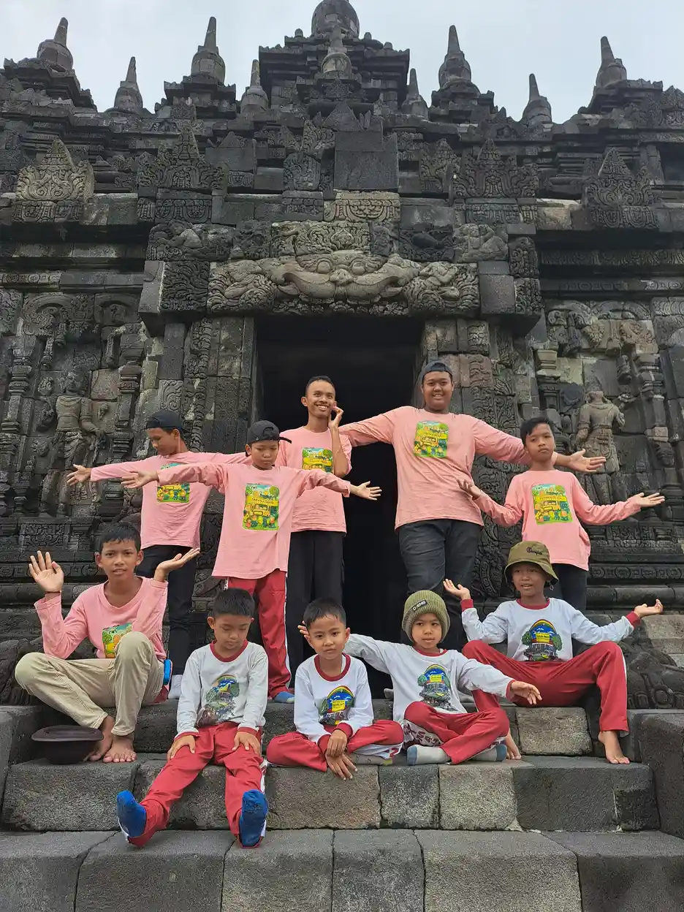
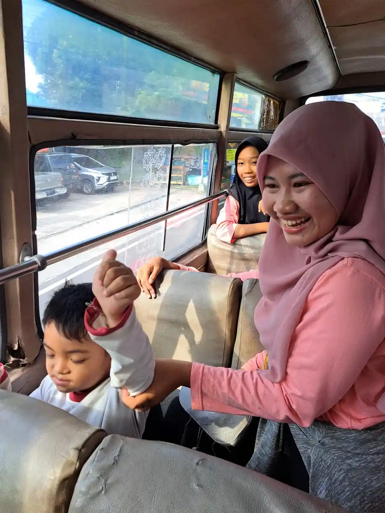
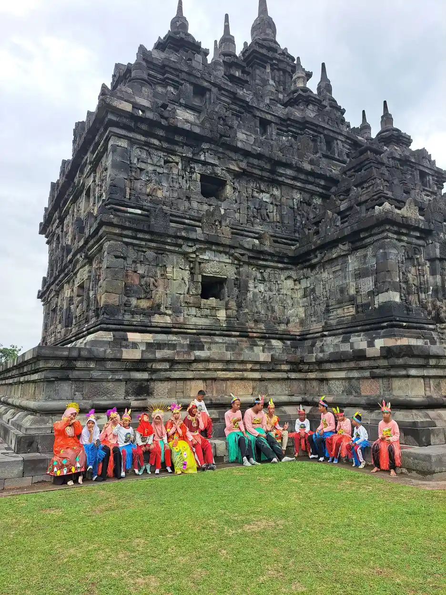
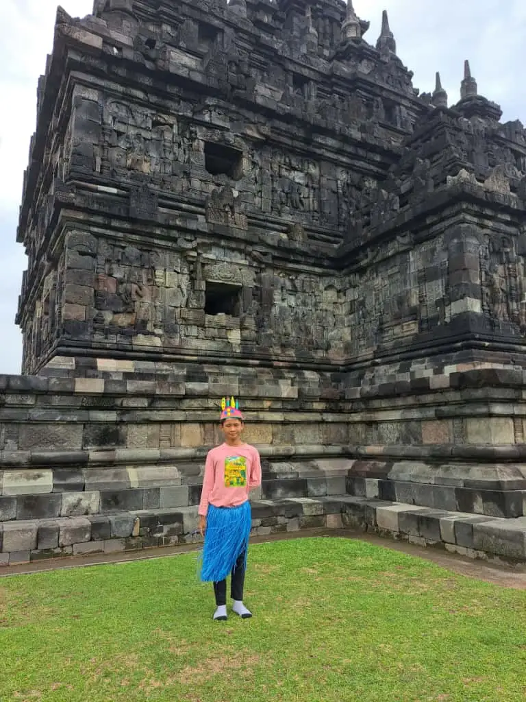

Jawaban singkat: alat bantu dengar untuk anak sekolah dipilih dan dipasang oleh audiolog atau dokter THT sesuai hasil pemeriksaan, bukan dibeli berdasarkan merek atau rekomendasi teman. Model di belakang telinga paling sering dipakai anak. Agar bermanfaat di kelas, alat perlu dipakai konsisten, dicek setiap hari, dirawat dari kelembapan, dan didukung posisi duduk yang tepat, mikrofon jarak jauh bila dianjurkan, ruang kelas yang tidak bising, serta guru yang memahami kebutuhan anak.
Daftar Isi
- Mengapa alat bantu dengar penting di sekolah
- Jenis alat bantu dengar dan perangkat pendengaran
- Perangkat hantaran tulang dan implan koklea
- Proses pemeriksaan dan fitting
- Perawatan harian di rumah
- Penggunaan di kelas
- Mikrofon jarak jauh dan akustik kelas
- Peran guru dan shadow teacher
- Kebiasaan cek harian rumah dan sekolah
- Akses pembiayaan
- Kapan kembali ke audiolog
- Pertanyaan yang sering diajukan
Mengapa Alat Bantu Dengar Penting untuk Anak Sekolah?
Sekolah adalah tempat anak menghabiskan banyak waktu untuk mendengar: penjelasan guru, pertanyaan teman, instruksi saat olahraga, sampai pengumuman di halaman. Anak dengan gangguan pendengaran yang tidak mendapat dukungan bisa tertinggal bukan karena kurang mampu, tetapi karena informasinya tidak sampai dengan jelas. Itulah sebabnya alat bantu dengar sering menjadi bagian penting dari rencana belajar anak dengan tuna rungu atau gangguan dengar ringan sampai berat.
Organisasi Kesehatan Dunia (WHO) memperkirakan sekitar 95,1 juta anak dan remaja usia 5 sampai 19 tahun hidup dengan gangguan pendengaran di seluruh dunia. WHO juga menjelaskan bahwa rehabilitasi pendengaran membantu seseorang berpartisipasi dalam pendidikan, pekerjaan, dan kehidupan keluarga. Salah satu bentuknya adalah penyediaan dan pelatihan memakai teknologi pendengaran, seperti alat bantu dengar, implan koklea, dan implan hantaran tulang.
Meski begitu, alat bukan satu-satunya jawaban. CDC menegaskan tidak ada satu penanganan yang tepat untuk setiap anak dan keluarga. Sebagian anak memakai alat bantu dengar bersama terapi wicara, sebagian juga belajar bahasa isyarat, dan sebagian memadukan beberapa cara komunikasi. Yang terpenting, anak mendapat akses bahasa yang konsisten di rumah maupun di sekolah, lalu kemajuannya dipantau bersama.

Jenis Alat Bantu Dengar dan Perangkat Pendengaran untuk Anak
Istilah alat bantu dengar sering dipakai untuk semua perangkat pendengaran, padahal cara kerjanya berbeda. Uraian berikut bersifat umum dan tidak merujuk merek tertentu. Pilihan untuk seorang anak hanya bisa ditentukan setelah pemeriksaan, karena dipengaruhi jenis dan derajat gangguan dengar, bentuk telinga, kondisi medis, serta kebutuhan komunikasi anak.
Di belakang telinga (behind-the-ear, BTE)
Badan alat bertengger di belakang daun telinga dan tersambung ke cetakan telinga yang dibuat khusus. ASHA menyebut BTE sebagai jenis yang paling umum dipakai anak. Pedoman Kemenkes juga menilai BTE lebih cocok untuk anak karena ukuran telinga terus berubah hingga pubertas, sehingga cukup cetakannya yang diganti. Model ini umumnya mendukung fitur seperti mikrofon terarah, telecoil, dan penerima FM.
Penerima di liang telinga dan di dalam telinga (RIC dan ITE)
Pada model penerima di liang telinga, badan alat tetap di belakang telinga, tetapi pengeras suaranya berada di liang telinga dan tersambung kabel tipis. Model di dalam telinga (in-the-ear, ITE) dibuat mengikuti bentuk telinga dan duduk di liang atau mangkuk telinga. ASHA mencatat sebagian model ini lebih sesuai untuk anak yang lebih besar dan remaja.
Perangkat Hantaran Tulang dan Implan Koklea
Perangkat hantaran tulang (bone conduction) meneruskan suara lewat getaran tulang tengkorak, dan dapat dipasang dengan ikat kepala atau ditanam. CDC menyebutnya dapat dipertimbangkan untuk gangguan dengar konduktif, campuran, atau satu sisi, terutama bila anak tidak bisa memakai model biasa. Implan koklea berbeda lagi: perangkat ini dipasang lewat operasi dan dipertimbangkan bila gangguan dengar berat dan alat bantu dengar tidak cukup membantu.
| Jenis | Cara kerja singkat | Catatan untuk anak sekolah |
|---|---|---|
| Di belakang telinga (BTE) | Memperkeras suara, disalurkan lewat selang ke cetakan telinga | Paling umum pada anak, cetakan diganti seiring pertumbuhan, umumnya mendukung mikrofon jarak jauh |
| Penerima di liang telinga (RIC) | Badan di belakang telinga, pengeras suara di liang telinga | Bentuk lebih ringkas, sesuai atau tidaknya ditentukan audiolog |
| Di dalam telinga (ITE) | Seluruh alat dibuat mengikuti bentuk telinga | Lebih sering untuk anak besar dan remaja karena telinga anak kecil masih tumbuh |
| Hantaran tulang | Meneruskan suara lewat getaran tulang tengkorak | Pilihan untuk gangguan konduktif, campuran, atau satu sisi tertentu |
| Implan koklea | Bagian dalam ditanam lewat operasi, merangsang saraf pendengaran | Untuk gangguan berat yang tidak cukup terbantu alat biasa, perlu pemrograman berkala dan latihan mendengar |
Proses Pemeriksaan dan Fitting oleh Audiolog atau Dokter THT
Alat bantu dengar bukan kacamata baca yang bisa dicoba sendiri di toko. Penyetelannya mengikuti hasil pemeriksaan pendengaran tiap telinga, sehingga prosesnya perlu dipandu dokter spesialis THT dan audiolog. Pedoman Kemenkes menegaskan pemasangan alat untuk bayi dan anak sebaiknya dilakukan audiolog yang berpengalaman menangani anak. Secara umum, alurnya berjalan seperti berikut.
- Pemeriksaan awal. Dokter THT memeriksa telinga dan menyingkirkan masalah medis yang perlu ditangani lebih dulu, misalnya cairan atau infeksi.
- Tes pendengaran lengkap. Audiolog mengukur ambang dengar tiap telinga dan menentukan jenis serta derajat gangguan dengar.
- Pemilihan alat. Model dipilih berdasarkan hasil tes, bentuk telinga, keterampilan tangan anak, kebutuhan komunikasi, dan kecocokan dengan teknologi kelas.
- Pembuatan cetakan telinga. Untuk model BTE, cetakan dibuat mengikuti liang telinga anak agar nyaman dan tidak berdenging.
- Fitting dan verifikasi. Audiolog menyetel alat lalu mengukur apakah suara ucapan benar-benar terdengar pada tingkat lembut, sedang, dan keras.
- Validasi dan pemantauan. Kemajuan anak dinilai dari kemampuan mendengar sehari-hari, kejelasan bicara, dan masukan keluarga serta guru.
ASHA menjelaskan bahwa pada pemasangan alat untuk anak, fokus utamanya adalah memastikan suara ucapan terdengar. Karena anak tumbuh cepat, cetakan telinga pada bayi bisa perlu diganti sesering setiap 1 sampai 2 bulan pada tahun pertama. Pada anak sekolah penggantiannya lebih jarang, tetapi cetakan yang mulai longgar tetap perlu diperiksa. Libatkan anak sesuai usianya, misalnya menanyakan apakah suara terasa terlalu keras atau ada bagian yang sakit.

Perawatan Harian Alat Bantu Dengar di Rumah
Alat yang mati, lemah, atau berdenging tidak membantu anak belajar, bahkan bisa membuat anak enggan memakainya. Karena itu perawatan harian sama pentingnya dengan pemilihan alat. Pedoman Kemenkes menyebut konsultasi pasca pemasangan perlu membahas cara memakai dan merawat semua komponen, termasuk baterai dan kabel. Ikuti petunjuk dari audiolog dan buku panduan alat, karena cara perawatan tiap model bisa berbeda.
Baterai dan pengisian daya
Sebagian alat memakai baterai sekali pakai, sebagian lain dapat diisi ulang. Biasakan memeriksa daya setiap pagi dan menyimpan baterai cadangan di tas sekolah bila alat memakai baterai biasa. ASHA menyebut pintu baterai yang sulit dibuka anak sebagai salah satu pertimbangan keamanan untuk anak. Simpan baterai cadangan di tempat yang tidak dijangkau adik atau anak kecil lain.
Kelembapan, keringat, dan kebersihan
Indonesia beriklim lembap, dan anak sekolah sering berkeringat saat bermain. Lepaskan alat sebelum mandi, berenang, atau bermain air, kecuali alat memang dirancang untuk itu. Lap bagian luar dengan kain kering, bersihkan cetakan sesuai petunjuk, dan simpan alat di wadahnya saat tidak dipakai. Tanyakan ke audiolog apakah alat anak perlu disimpan di wadah pengering. Laporkan ke audiolog bila selang mengembun, retak, atau berubah warna.
- Simpan alat di wadah yang sama setiap malam supaya tidak hilang atau terinjak.
- Jauhkan dari hewan peliharaan, panas langsung, dan tumpahan minuman.
- Jangan meminjamkan cetakan telinga atau alat ke anak lain.
- Catat tanggal ganti baterai dan keluhan agar mudah dilaporkan saat kontrol.
Penggunaan Alat Bantu Dengar di Kelas
Alat bantu dengar bekerja paling baik ketika jarak ke sumber suara dekat dan suasana tidak bising. Masalahnya, ruang kelas jarang sunyi. ASHA menjelaskan dua penyebab akustik kelas yang buruk: kebisingan latar, seperti kendaraan, kipas, atau siswa di lorong, dan gema yang muncul ketika suara memantul di dinding dan meja. Kondisi ini menyulitkan anak memahami ucapan, membaca, mengeja, dan berkonsentrasi.
Posisi duduk dan cara guru berbicara
Tempatkan anak cukup dekat dengan guru, jauh dari jendela ramai atau kipas yang berisik, dan dengan sudut pandang yang jelas ke wajah guru serta papan tulis. Banyak anak juga membaca gerak bibir dan ekspresi. Guru sebaiknya berbicara sambil menghadap kelas, tidak sambil menulis di papan, dan mengulang pertanyaan teman yang duduk jauh. Posisi duduk termasuk akomodasi yang disebut ASHA bersama penataan akustik kelas.
Dukungan visual melengkapi apa yang didengar anak. Tuliskan tugas, halaman buku, dan tenggat di papan atau kertas, gunakan gambar dan contoh nyata, serta beri tanda sebelum berganti topik. Cara ini membantu anak yang sesekali kehilangan sebagian kalimat, dan juga bermanfaat bagi siswa lain di kelas.
Mikrofon Jarak Jauh dan Akustik Ruang Kelas
Sistem FM atau mikrofon jarak jauh terdiri dari mikrofon kecil yang dipakai guru dan penerima yang tersambung ke alat dengar anak. Suara guru langsung sampai ke telinga anak tanpa banyak tertutup bising. Pedoman Kemenkes menyebut pemilihan alat untuk anak perlu memperhatikan aksesibilitas teknologi mikrofon jarak jauh, dan sistem ini dapat meningkatkan perbandingan sinyal terhadap bising di kelas. Tanyakan ke audiolog apakah anak membutuhkannya.
| Hambatan | Dampak pada anak | Penyesuaian yang bisa dicoba |
|---|---|---|
| Kebisingan dari luar dan kipas | Suara guru tertutup bising | Duduk jauh dari jendela ramai, matikan alat berisik saat tidak dipakai |
| Gema di ruangan berdinding keras | Ucapan terdengar bercampur dan kabur | Gorden, karpet, papan gabus di dinding, alas lembut di kaki kursi |
| Guru berbicara sambil membelakangi | Anak kehilangan petunjuk gerak bibir | Menghadap kelas saat menjelaskan, tulis instruksi penting di papan |
| Diskusi kelompok yang ramai | Anak sulit mengikuti giliran bicara | Atur giliran bicara, ulangi jawaban teman, kelompok kecil di sudut tenang |
Penyesuaian ruangan di tabel ini bersumber dari saran ASHA tentang akustik kelas. Kelas yang lebih tenang juga membantu siswa lain dan menjaga suara guru. Untuk ide penataan yang lebih luas, baca juga tulisan kami tentang pengelolaan kelas inklusi.

Peran Guru dan Shadow Teacher
ASHA menyebut perawatan anak pengguna alat bantu dengar melibatkan tim, termasuk audiolog, dokter THT, terapis wicara, guru kelas, dan guru bagi anak tuli. Di Indonesia, peran ini sering dibagi antara guru kelas, guru pendamping khusus, dan shadow teacher. Guru tidak perlu menjadi ahli audiologi, tetapi perlu tahu cara kerja dasar alat dan apa yang harus dilakukan bila alat bermasalah.
- Guru kelas: mengatur posisi duduk, memakai mikrofon jarak jauh bila tersedia, menulis instruksi penting, dan memberi waktu tunggu sebelum anak menjawab.
- Shadow teacher atau guru pendamping: melakukan cek alat setiap pagi, mengulang instruksi secara individual, mencatat kapan anak tampak kesulitan mendengar, dan menjembatani komunikasi dengan orang tua.
- Teman sekelas: dapat diajak berbicara bergiliran dan menghadap anak, misalnya lewat buddy system, tanpa memperlakukan alat sebagai bahan candaan.
Guru juga berperan menjaga martabat anak. Hindari menegur anak di depan kelas soal alatnya, dan ajak anak menjelaskan alat itu sendiri bila ia nyaman. Untuk ujian, pertimbangkan instruksi tertulis dan ruang yang lebih tenang, seperti dibahas dalam adaptasi soal ujian untuk anak ABK. Strategi berkomunikasi sehari-hari juga bisa dipelajari di cara berkomunikasi dengan anak tuna rungu.
Kebiasaan Cek Harian Rumah dan Sekolah
ASHA memasukkan pemeriksaan visual dan pengecekan dengar sederhana sebagai bagian rutin dukungan bagi anak pengguna alat bantu dengar, termasuk pengecekan baterai. Kebiasaan ini paling efektif bila dilakukan di dua tempat: sebelum berangkat oleh orang tua, lalu di awal pelajaran oleh guru atau pendamping. Minta audiolog mengajarkan cara cek yang sesuai dengan alat anak, lalu tuliskan langkahnya di kartu kecil yang disimpan di tas.
- Lihat bagian luar alat: tidak retak, tidak basah, selang tidak tertekuk atau berembun.
- Periksa cetakan telinga: bersih dari kotoran telinga dan tidak longgar.
- Pastikan baterai terisi atau daya cukup, dan alat menyala.
- Lakukan pengecekan dengar sesuai cara yang diajarkan audiolog, misalnya dengan stetoskop dengar khusus, untuk menangkap suara putus atau berdesis.
- Pasang di telinga anak dan perhatikan apakah ada bunyi mendenging.
- Lakukan tes respons sederhana yang dianjurkan audiolog, misalnya meminta anak mengulang beberapa bunyi dari jarak dekat.
- Bila memakai mikrofon jarak jauh, pastikan penerima tersambung dan mikrofon guru menyala.
- Catat hasilnya di buku penghubung, lalu kabari orang tua bila ada masalah.
Buku penghubung membantu orang tua dan sekolah melihat pola. Misalnya, alat sering mati pada hari olahraga karena keringat, atau anak lebih sering melepas alat setelah jam istirahat. Catatan seperti ini sangat berguna saat kontrol, dan sejalan dengan peran orang tua yang dibahas dalam peran orang tua dalam pendidikan inklusi.
Akses Pembiayaan Alat Bantu Dengar
Biaya sering menjadi pertanyaan pertama keluarga. Perpres Nomor 82 Tahun 2018 tentang Jaminan Kesehatan menyebut manfaat Jaminan Kesehatan mencakup alat kesehatan sesuai kebutuhan medis, termasuk alat bantu kesehatan. Untuk alat bantu dengar secara khusus, Pedoman Nasional Pelayanan Kedokteran Tata Laksana Tuli Sensorineural Kongenital yang ditetapkan Kemenkes tahun 2022 mencatat alat bantu dengar diberikan kepada peserta BPJS Kesehatan sesuai indikasi medis, dengan plafon harga dan batasan waktu pengambilan.
Dokumen yang sama menulis bahwa saat itu tarif yang diberikan maksimal satu juta rupiah dan paling cepat lima tahun sekali per telinga, dan menilai jumlah itu belum mencukupi kebutuhan orang tua anak dengan gangguan pendengaran. Aturan tarif dapat diperbarui, sehingga keluarga perlu menanyakan ketentuan terbaru langsung ke fasilitas kesehatan rujukan atau kantor BPJS Kesehatan, termasuk syarat rujukan dan dokumen yang dibutuhkan.
Selain jaminan kesehatan, beberapa keluarga mencari dukungan dari program pemerintah daerah, lembaga sosial, atau donatur. Ringkasan program yang tersedia dapat dibaca di program pemerintah untuk ABK. Apa pun sumbernya, pastikan alat tetap dipilih dan disetel oleh tenaga profesional, serta tanyakan biaya lanjutan seperti baterai, cetakan baru, servis, dan kontrol berkala sebelum memutuskan.

Kapan Anak Perlu Kembali ke Audiolog?
Pendengaran anak dapat berubah, telinga terus tumbuh, dan kebutuhan belajar bertambah seiring naik kelas. Pedoman Kemenkes menyebut gangguan pendengaran progresif umum terjadi pada bayi dan anak, sehingga alat perlu bisa disetel ulang. Selain jadwal kontrol rutin yang ditentukan audiolog, ada beberapa tanda yang membuat anak perlu diperiksa lebih cepat.
- Anak tampak lebih sering tidak merespons panggilan, padahal alat menyala.
- Guru melaporkan anak makin sulit mengikuti pelajaran atau sering salah menangkap instruksi.
- Alat sering berdenging walaupun sudah dipasang dengan benar, tanda cetakan mungkin sudah longgar.
- Telinga merah, lecet, nyeri, gatal hebat, atau keluar cairan.
- Anak terus menolak memakai alat atau mengeluh suara terlalu keras.
- Alat jatuh, terendam air, atau rusak.
Kontrol juga menjadi kesempatan meninjau tujuan belajar bersama terapis wicara dan sekolah. Bila anak baru didiagnosis, baca juga penjelasan tentang intervensi dini dan asesmen ABK agar dukungan disusun sejak awal. Pertanyaan apakah gangguan dengar dapat pulih dibahas di apakah tuna rungu bisa sembuh. Semoga Allah memudahkan setiap langkah keluarga dalam mendampingi ananda belajar.
Pertanyaan yang Sering Diajukan
Apakah anak harus memakai alat bantu dengar sepanjang hari di sekolah?
Umumnya alat dipakai secara konsisten selama anak terjaga, termasuk saat belajar di kelas, karena pendengaran dibutuhkan untuk menangkap bahasa sepanjang hari. Jadwal pemakaian yang tepat tetap mengikuti arahan audiolog atau dokter THT yang memasang alat, terutama pada masa adaptasi.
Jenis alat bantu dengar apa yang paling sering dipakai anak?
Model di belakang telinga (BTE) paling sering dipakai anak karena cetakan telinganya dapat diganti saat telinga tumbuh, dan model ini umumnya mendukung fitur seperti mikrofon jarak jauh. Pilihan akhir ditentukan audiolog berdasarkan jenis dan derajat gangguan dengar, bentuk telinga, serta kebutuhan anak.
Apa itu sistem FM atau mikrofon jarak jauh di kelas?
Sistem ini terdiri dari mikrofon yang dipakai guru dan penerima yang terhubung ke alat dengar anak. Suara guru dikirim langsung sehingga tidak terlalu tertutup kebisingan dan jarak. Pedoman Kemenkes menyebut manfaatnya dalam meningkatkan perbandingan sinyal terhadap bising di ruang kelas.
Bagaimana cara guru mengetahui alat bantu dengar anak berfungsi?
Guru atau pendamping dapat melakukan pengecekan singkat setiap pagi sesuai panduan audiolog: alat menyala, baterai cukup, selang dan cetakan bersih, tidak ada bunyi mendenging, lalu anak merespons suara sederhana. Bila ada keraguan, hubungi orang tua dan catat temuannya.
Apakah alat bantu dengar membuat pendengaran anak normal kembali?
Tidak. Alat bantu dengar membantu memperkeras dan memperjelas suara, tetapi tidak mengembalikan pendengaran menjadi seperti sebelumnya. Hasilnya dipengaruhi jenis gangguan, usia mulai memakai, konsistensi pemakaian, lingkungan dengar, serta dukungan terapi bicara dan bahasa.
Apakah BPJS Kesehatan menanggung alat bantu dengar anak?
Pedoman Nasional Pelayanan Kedokteran dari Kemenkes tahun 2022 mencatat alat bantu dengar diberikan kepada peserta BPJS Kesehatan sesuai indikasi medis, dengan plafon harga dan batasan waktu pengambilan. Ketentuan bisa berubah, jadi tanyakan aturan terbaru ke fasilitas kesehatan atau kantor BPJS Kesehatan.
Bagaimana jika anak sering melepas alat bantu dengarnya di kelas?
Cari penyebabnya lebih dulu: alat terasa sakit, cetakan longgar, suara terlalu keras, berdenging, atau anak merasa malu. Catat kapan anak melepasnya, lalu sampaikan ke audiolog. Klip pengaman, penyesuaian setelan, dan dukungan teman sekelas sering membantu anak lebih nyaman.
Seberapa sering anak perlu kontrol ke audiolog?
Frekuensi kontrol ditentukan audiolog. Anak kecil biasanya lebih sering kontrol karena telinga tumbuh dan cetakan perlu diganti. Segera kembali bila respons anak terhadap suara menurun, alat sering berdenging, telinga lecet atau bernanah, atau guru melaporkan perubahan perilaku mendengar.
Bacaan Terkait
Sumber dan Referensi
- WHO, Deafness and hearing loss (fact sheet)
- WHO, World report on hearing
- CDC, Treatment and Intervention for Hearing Loss in Children
- ASHA Practice Portal, Hearing Aids for Children
- ASHA, Classroom Acoustics
- ASHA, Cochlear Implants
- Kemenkes, KMK HK.01.07/MENKES/1989/2022 tentang PNPK Tata Laksana Tuli Sensorineural Kongenital
- JDIH BPK, Perpres Nomor 82 Tahun 2018 tentang Jaminan Kesehatan
Catatan: Artikel ini bersifat edukasi umum dan bukan pengganti konsultasi dengan psikolog, tenaga kesehatan, atau petugas layanan sosial resmi. Sumber resmi diperiksa pada 11 Oktober 2026. Artikel ini tidak memberikan diagnosis, rekomendasi merek, atau penyetelan alat untuk anak tertentu.
Status tinjauan medis: artikel ini disusun oleh tim pendidik, belum ditinjau oleh dokter berlisensi. Tinjauan oleh tenaga medis berkredensial sedang kami siapkan dan status ini akan diperbarui di halaman ini begitu selesai. Alur tinjauan dan koreksi dijelaskan di Kebijakan Editorial YUKA. Untuk keputusan pemilihan alat, pemasangan, atau terapi, rujuklah pada dokter THT, audiolog, atau terapis wicara yang menangani anak.